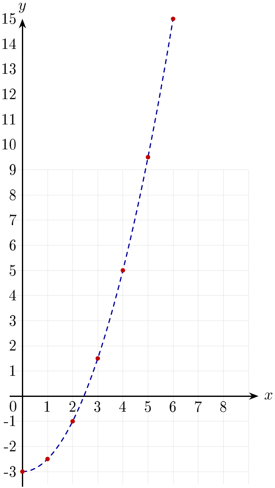
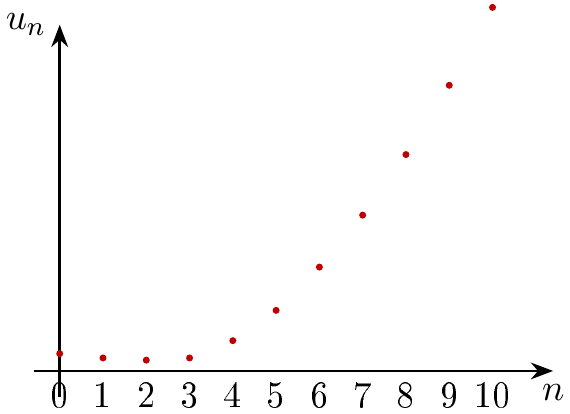
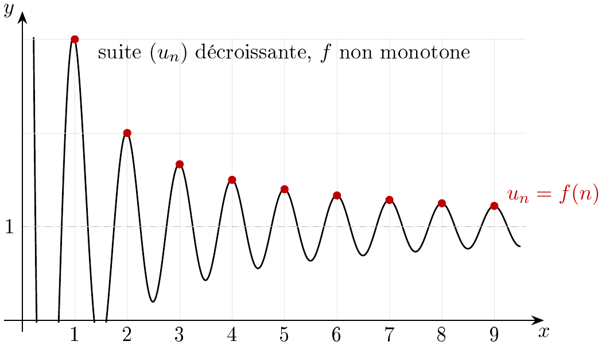

Chapitre 3 : Les suites (généralités)
Première spécialité · Chapitre 3 — Les suites généralités · cours de Frederik de Peyrelongue
I. Définition
I.1 Définition d'une suite numérique
Exemple 0 : la suite $u$ des nombres pairs : $0,2,4,6,8,10,12,\dots$
On note $(u_{n})$ l'ensemble des « éléments » de cette suite de nombres tel que :
On a ainsi défini une suite numérique.
On peut lui associer une fonction définie sur $\N$ par
Une suite numérique $(u_{n})$ est une liste ordonnée de nombres réels telle qu'à tout entier $n$ on associe un nombre réel noté $u_{n}$.
$u_{n}$ est appelé le terme de rang $n$ de cette suite (ou d'indice $n$).
I.2 Générer une suite numérique par une formule explicite
Une suite définie à l'aide d'une fonction $f$, définie sur $\N$, est dite définie de manière explicite. On a alors $u_{n}=f(n)$ pour $n\in\N$.
Pour tout $n$ de $\N$, on donne : $u_{n}=2n+1$, ce qui définit la suite des nombres impairs.
Les premiers termes de cette suite sont donc :
Pour tout $n$ de $\N$, on donne : $w_{n}=2n^{2}-n+1$.
Les premiers termes de cette suite sont donc :
Lorsqu'on génère une suite par une formule explicite, chaque terme de la suite est exprimé en fonction de $n$ et indépendamment des termes précédents : la suite est une fonction de la variable entière $n$.
I.3 Générer une suite numérique par une relation de récurrence
Une suite est définie par récurrence lorsque le terme de rang $n$ est défini à partir de termes de rang qui le précèdent.
On définit la suite $(u_{n})$ par : $u_{0}=3$ et chaque terme de la suite est le double de son précédent.
Les premiers termes de cette suite sont donc :
De façon générale, on peut noter : $u_{n+1}=2u_{n}$ et il faut initier la suite avec le 1er terme $u_{0}=3$.
On définit la suite $(v_{n})$ par : $v_{0}=3$ et, pour tout $n$ de $\N$, $v_{n+1}=4v_{n}-6$.
Les premiers termes de cette suite sont donc :
Contrairement à une suite définie par une formule explicite, il n'est pas possible, dans l'état, de calculer par exemple $v_{100}$ sans connaître $v_{99}$.
On définit la suite $(w_{n})$, somme des $n$ premiers entiers, par : pour tout $n$ de $\N\setminus\{0\}$,
Les premiers termes de cette suite sont donc :
On remarque par ailleurs que $w_{n+1}=w_{n}+n+1$ :
Lorsqu'on génère une suite par une relation de récurrence, chaque terme de la suite s'obtient à partir d'un (ou plusieurs) des termes précédents.
À noter : le mot récurrence vient du latin recurrere qui signifie « revenir en arrière ».
II. Représentation graphique d'une suite
II.1 Suite définie de manière explicite
Soit $f$ une fonction définie sur $\N$ et $(u_{n})$ la suite définie par $u_{n}=f(n)$.
Dans un repère du plan, on représente une suite par un nuage de points de coordonnées $(n\,;u_{n})$.
Pour représenter une suite $u$ dans un repère, on place :
- les indices $n$ sur l'axe des abscisses ;
- les termes $u_{n}$ sur l'axe des ordonnées ;
- les points de coordonnées $(n\,;u_{n})$ dans le repère, sans les relier (image de points).
Pour tout $n$ de $\N$, on donne $u_{n}=\dfrac{n^{2}}{2}-3$.
On construit le tableau de valeurs avec les premiers termes de la suite :
| $n$ | $0$ | $1$ | $2$ | $3$ | $4$ | $5$ | $6$ | $7$ | $8$ |
| $u_{n}$ | $-3$ | $-2{,}5$ | $-1$ | $1{,}5$ | $5$ | $9{,}5$ | $15$ | $21{,}5$ | $29$ |

II.2 Suite définie par récurrence
Soit $f$ une fonction définie sur $\N$ et $(u_{n})$ la suite définie par la relation de récurrence $u_{n+1}=f(u_{n})$ et le premier terme $u_{0}$.
Pour représenter cette suite, il est possible de calculer les termes un à un : $u_{1}$, $u_{2}$, …, $u_{n}$, et de se placer dans un repère orthonormal pour placer les points $U_{k}$ de coordonnées $(k\,;u_{k})$.

- Tracer la courbe représentant la fonction $f$.
- Tracer la droite d'équation $y=x$ : chaque point de cette droite possède une abscisse égale à l'ordonnée.
- Placer le point de coordonnées $(0\,;u_{0})$, le premier terme de la suite.
- À l'aide de la droite $\Delta : y=x$, on cherche l'antécédent de $u_{0}$ qui est $u_{0}$, que l'on obtient par projection orthogonale sur l'axe des abscisses.
- On obtient alors $u_{1}$ comme image de $u_{0}$ par la fonction $f$ : en effet $u_{1}=f(u_{0})$.
- On va itérer le même processus : on cherche l'antécédent de $u_{1}$ par la fonction $y=x$ ; l'antécédent est $u_{1}$ et on l'obtient par projection orthogonale sur l'axe des abscisses. Puis on peut obtenir $u_{2}$ comme image de $u_{1}$ par la fonction $f$. Et ainsi de suite : de proche en proche, on obtient tous les termes de la suite sans effectuer de calcul !!!
III. Sens de variation d'une suite numérique
Soit un entier $p$ et une suite numérique $(u_{n})$.
La suite $(u_{n})$ est dite croissante à partir du rang $p$ si, pour $n\geqslant p$, on a $u_{n+1}\geqslant u_{n}$.
La suite $(u_{n})$ est dite décroissante à partir du rang $p$ si, pour $n\geqslant p$, on a $u_{n+1}\leqslant u_{n}$.
On a représenté ci-dessous le nuage de points des premiers termes d'une suite $(u_{n})$.
On peut conjecturer que cette suite est croissante pour $n\geqslant 3$.

III.1 Méthode : étudier les variations d'une suite
Pour tout $n$ de $\N$, on donne la suite $(u_{n})$ définie par : $u_{n}=n^{2}-4n+4$. Démontrer que la suite $(u_{n})$ est croissante à partir d'un certain rang.
1. On commence par calculer la différence $u_{n+1}-u_{n}$ :
2. On étudie ensuite le signe de $u_{n+1}-u_{n}$ :
$u_{n+1}-u_{n}\geqslant 0$ pour $2n-3\geqslant 0$, donc pour $n\geqslant 1{,}5$. Ainsi, pour $n\geqslant 2$ ($n$ est entier), on a $u_{n+1}-u_{n}\geqslant 0$. On en déduit qu'à partir du rang $2$, la suite $(u_{n})$ est croissante.
Pour tout $n$ de $\N^{*}$, on donne la suite $(v_{n})$ définie par : $v_{n}=\dfrac{1}{n(n+1)}$. Démontrer que la suite $(v_{n})$ est décroissante.
1. On étudie le signe de $v_n$
2. On peut calculer le rapport $\dfrac{v_{n+1}}{v_{n}}$ :
3. Puis on compare $\dfrac{v_{n+1}}{v_{n}}$ à $1$ :
Or $0\leqslant n\leqslant n+2$, on a $\dfrac{v_{n+1}}{v_{n}}<1$ et donc $v_{n+1}<v_{n}$ (car $v_{n}>0$).
Soit $v_{n+1}-v_{n}<0$ et on en déduit que $(v_{n})$ est décroissante.
Soit une fonction $f$ définie sur $\left[0\,;+\infty\right[$ et une suite numérique $(u_{n})$ définie sur $\N$ par $u_{n}=f(n)$. Soit un entier $p$.
- Si $f$ est croissante sur l'intervalle $\left[p\,;+\infty\right[$, alors la suite $(u_{n})$ est croissante à partir du rang $p$.
- Si $f$ est décroissante sur l'intervalle $\left[p\,;+\infty\right[$, alors la suite $(u_{n})$ est décroissante à partir du rang $p$.
- $f$ est croissante sur $\left[p\,;+\infty\right[$ : donc, par définition d'une fonction croissante, on a, pour tout entier $n\geqslant p$, comme $n+1>n$, $f(n+1)>f(n)$ et donc $u_{n+1}>u_{n}$.
- Démonstration analogue pour la décroissance.
En effet $0<n<n+1$, donc $f(n)>f(n+1)$, $\forall n\in\N$.
Donc $\forall n\in\N$, $u_{n}>u_{n+1}$ : la suite $u_{n}$ est donc décroissante ! \end{boxmethode}
Attention : la réciproque de la propriété énoncée plus haut est fausse.
La représentation suivante montre une suite décroissante alors que la fonction $f$ correspondante n'est pas monotone.

On a posé ici $f(x)=\dfrac{2\sin\left(\frac{\pi}{2}+2\pi x\right)}{x}+1$ sur $\left]0\,;+\infty\right[$ et $u_{n}=f(n)$ pour $n\geqslant1$.
Comme $\sin\left(\frac{\pi}{2}+2\pi n\right)=1$, on a $u_{n}=1+\dfrac{2}{n}$ : la suite est bien décroissante, alors que la fonction $f$ oscille indéfiniment autour de $1$ et n'est donc monotone sur aucun intervalle de la forme $\left[p\,;+\infty\right[$.
IV. Notion de limite d'une suite
4.1 Suite convergente
Pour tout $n$ de $\N\setminus\{0\}$, on considère la suite $(u_{n})$ définie par :
On construit le tableau de valeurs avec des termes de la suite :
| $n$ | $1$ | $2$ | $3$ | $4$ | $5$ | $10$ | $15$ | $50$ | $500$ | $5000$ |
| $u_{n}$ | $8$ | $5{,}5$ | $4{,}6666$ | $4{,}25$ | $4$ | $3{,}5$ | $3{,}3333$ | $3{,}1$ | $3{,}01$ | $3{,}001$ |
Plus $n$ devient grand, plus les termes de la suite semblent se rapprocher de $3$.
On dit que la suite $(u_{n})$ converge vers $3$ et on note :
Une suite $(u_{n})$ est convergente lorsqu'elle admet une unique limite finie $\ell$ !
On notera
Traduction : « Aussi petit que soit la taille de l'intervalle autour de la limite $\ell$, il existe toujours un rang à partir duquel la suite est coincée dans cette intervalle ! »
4.2 Suite divergente
Pour tout $n$ de $\N$, on considère la suite $(u_{n})$ définie par : $u_{n}=n$.
Calculons quelques termes de cette suite :
Plus $n$ devient grand, plus les termes de la suite semblent devenir grands.
On dit que la suite $(u_{n})$ diverge vers $+\infty$ et on note :
Pour tout $n$ de $\N$, on considère la suite $(v_{n})$ définie par : $v_{n+1}=(-1)^{n}v_{n}$ et $v_{0}=2$.
Calculons les premiers termes de cette suite :
Lorsque $n$ devient grand, les termes de la suite ne semblent pas se rapprocher vers une valeur unique. On dit que la suite $(v_{n})$ diverge.
V. Algorithme Python pour suite récurrente
5.1 Calculer le terme de rang $n$
Soit la suite $(u_{n})_{n\in\N}$ définie par
Algorithme en Python
def calcul_terme_suite(n):
u = 5 #On affecte le 1er terme de la suite a u
for i in range (n) : #Boucle for va repeter n fois la meme instruction
u = 2 * u ** 2 + u + 3 #On calcule le terme suivant et on l'affecte a u
return u #Donne le resultat du terme de rang n5.2 Calculer un seuil
Soit la suite $u_{n}=3-\dfrac{1}{2^{n}}$ : déterminer à partir de quel rang la suite $(u_{n})$ vérifie
c'est-à-dire que $|u_{n}-3|<0{,}0001$.
Algorithme en Python
def calcul_seuil(s):
n=0 #compteur
u=2 #On affecte le premier terme de la suite a u
while abs(u - 3) > s: #Tant que la suite est a une distance > s de 3
u = 3 - 1/2 ** n #On calcule le terme suivant
n = n + 1 #A chaque tour on augmente le compteur de 1
return (n,u) #Rang a partir duquel le seuil est depasseRésultat pour $s=0{,}001$ :
>>> calcul_seuil(0.001) (11, 2.9990234375)